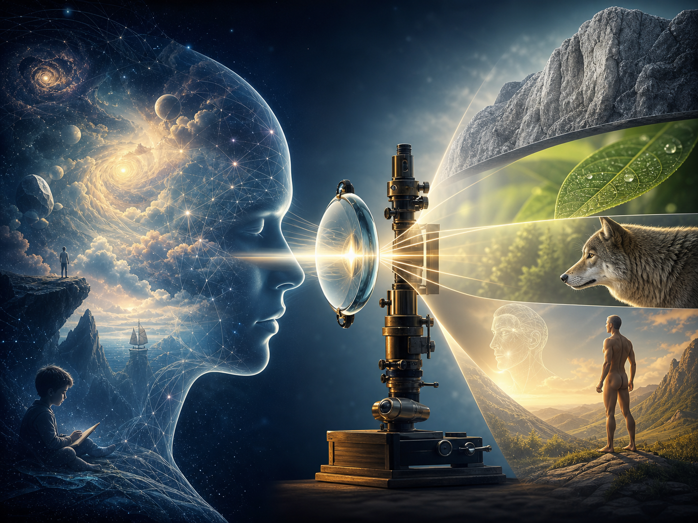

科學終將服從於智慧；
否則，科學可能成為毀滅世界的力量。
而智慧必須透過科學來執行；
否則，再深的領悟，也做不出成果。
身重要，還是心重要？
過猶不及，
最後還是要回到中庸之道。
唯物論是一種哲學觀點。
它認為世界的根本是物質，
不是精神、意識或神祕力量。
人的情緒、想法與信念，
不是憑空出現的，
而是與大腦、身體、環境、社會條件有關。
它相對的概念，通常是唯心論。
唯心論認為：
精神、意識、觀念是根本。
唯物論認為：
物質、現實條件是根本。
但我認為，
真正的答案不在二選一。
心與物，
意識與條件，
彼此互相影響，
這才更接近真。
心是一切嗎？
不是。
空想跟信念最大的差別在於：
空想只是拜拜祈禱，
就以為東西會自己來。
信念是在潛意識中堅信自己可以，
並讓外在開始產生行動。
思維→行為→習慣→個性→命運
眼見為實嗎？
如果只相信眼中的世界，
你可能永遠都會相信地球是平的，
太陽是繞著地球轉的。
晚上抬頭，
你只會看到一片漆黑，
覺得每顆星星都一樣。
你根本發覺不出宇宙之大，
星系之多。
所以科學家不是沒有想像力的人。

科學往往是先提出想像，
再用方法驗證。
從大腦科學來看，
人的感知不是單純接收外界。
大腦會先形成想像與預測，
再透過感官不斷修正現實。
就像作夢時，
外在感官輸入變得安靜，
大腦仍然能創造出一個真實感很強的世界。
所以我們要發揮想像，
接受意識的力量。
也要透過感官與科學，
把想像化為實體。
經驗會讓你理解眼前世界有四個層次：
石頭、植物、動物、人類。
思考會讓你發覺，
這四個層次分別代表：
物質、生命、意識、自我意識。
物質無法理解生命是什麼。
植物也不會知道，
什麼叫做有意識。
一個只被慣性與私欲主導的意識，
也很難理解生命的意義。
那會不會有比自我意識更高的層次？
或許有。
只是現在的我們，
可能還無法完全理解。
所以溝通也是一樣。
你不能只用自己的頻率，
要求別人立刻理解。
理解之前，
要先接受對方站在哪裡。
『溝通必先調頻，理解必先接受。』